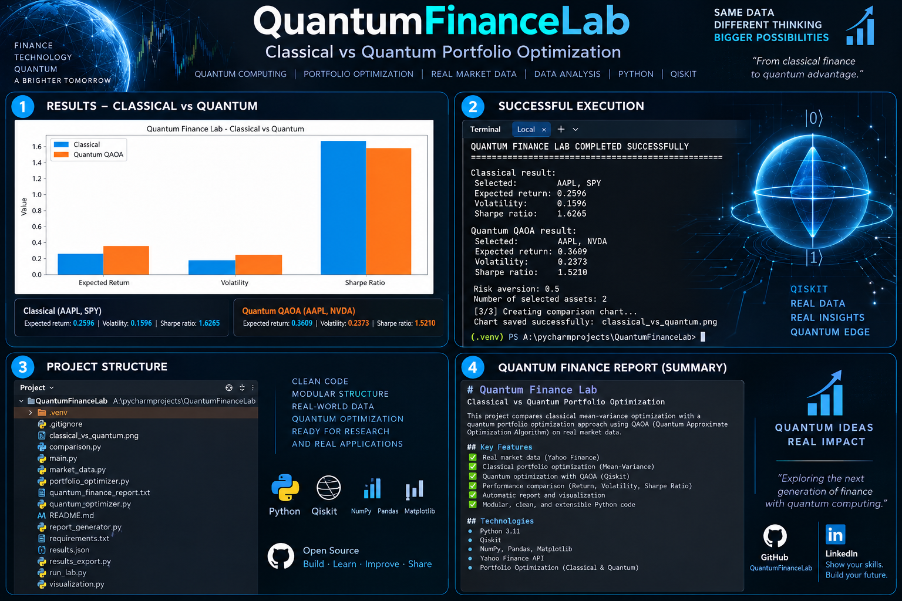

02 · ALGORITHMS
Variational Algorithms
Experiments with QAOA, VQE, parameterized quantum circuits, classical optimizers and expectation values.
A hybrid quantum-classical research environment for portfolio optimization, QAOA, VQE, quantum machine learning and quantitative market analysis — connecting financial data, Python workflows and quantum algorithms.
From classical market inputs to quantum optimization and decision-support experiments.
Stress-test portfolio allocations across market regimes and compare original, classical and QAOA-style risk-return responses.
Experiments with QAOA, VQE, parameterized quantum circuits, classical optimizers and expectation values.
Quantum feature maps, variational circuits and hybrid models for financial classification and market-pattern research.
Historical prices, expected returns, volatility, correlations, covariance matrices and portfolio risk metrics.
The project visual below documents portfolio metrics, execution output and the research structure used in the lab.
